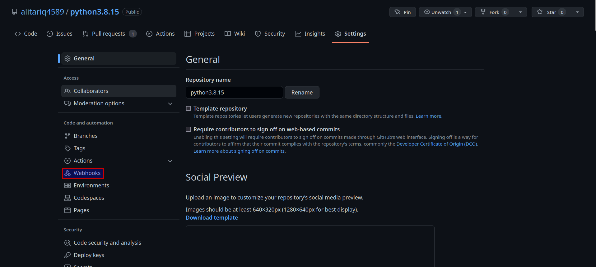
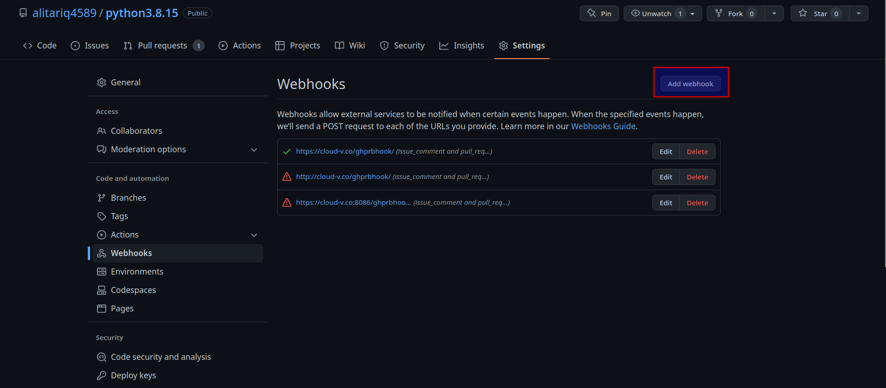
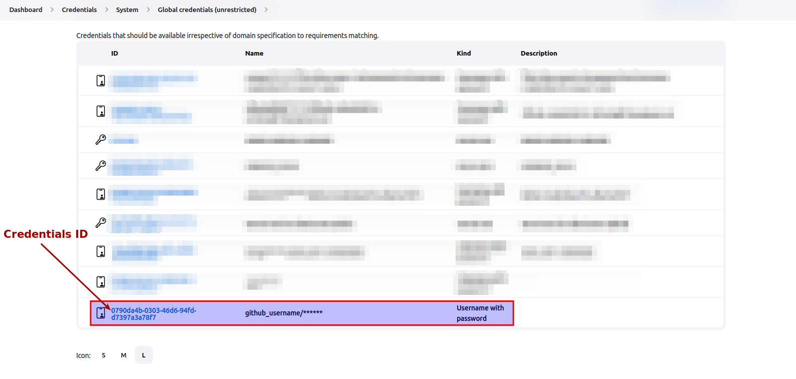

Setting up CI/CD with Jenkins
This document describes how one can get access to Jenkins and add their project in Jenkins for CI/CD. The Jenkins server is currently hosted at https://dash.cloud-v.co
All the compute instances in Jenkins have restrictions regarding which jobs will run on the compute instance. The administrator has to allow you for using specific instance. Be sure to contact administrator and tell them which instance you want to use.
There are currently two ways to integrate projects with Jenkins on Cloud-V.
- Using Cloud-V automatic integration (beta)
- Manually integrating your project with Cloud-V
Pre-requisites
- GitHub/GitLab account.
- GitHub/GitLab project repository with owner rights.
- Access to https://dash.cloud-v.co and https://cloud-v.co (fill this form to request the access)
Getting a Jenkins account on Cloud-V
After getting access to the Jenkins server, use one of the following two methods to create a CI pipeline with Cloud-V.
1. Using Cloud-V automatic integration (beta)
Jenkins server in Cloud-V
For ease of convenience for users and eliminating time delays of manual set up, users can add their GitHub and GitLab repository in Cloud-V by just adding their repository URL on the Cloud-V page. The source code for this is open-source here.
Currently, there are support for following version control systems:
- GitHub
- GitLab
For GitHub
For integrating user repository with Cloud-V, there is a GitHub app which users can install in their repository. The purpose of creating the app and publishing it for users is that, GitHub app has all the permissions already set up. So, when a user installs GitHub app, the app automatically sets up all the permissions for the user's repository.
Following is the procedure for installing and integrating the repository with Cloud-V github app and for creating the CI pipeline in Cloud-V dashboard.
- Visit this link for installing GitHub app.
- Click on "Install" button which will take you to permissions page where you can select the permissions for the repository and also choose the repository which you would like to integrate with Cloud-V app
- Select "Only select repositories" if you would like to integrate a specific repository or number of repositories instead of integrating Cloud-V app with all the repositories.
- Click on "Install & Authorize" which will take you to the page where you can add repository URL
- Add repository URL and click on "Submit"
-
The next page will show you:
-
Access Token (will be visible one-time)
- URL of the GitHub repository which is configured (currently, one token can be configured with one repository)
-
The link of the CI pipeline which is created automatically in Cloud-V CI dashboard
-
Now go to the repository settings in the following manner and create a webhook for trigger with pull requests and push to branches
-
Settings > Webhooks > Add webhook -
Fill the webhook settings in following manner
-
Payload URL: https://dash.cloud-v.co/github-webhook/ Content Type: application/jsonEnable SSL VerificationWhich events would you like to trigger this webhook?: Just the push event- Leave other fields as is
Note: This creates a github multibranch pipeline automatically and it builds when a PR is created. If you need to check the source code or want to suggest any improvement for this, visit https://github.com/10x-Engineers/Cloud-V-git-automation and create an issue.
For GitLab
Following is the procedure for integrating repository automatically with GitLab:
There is no app for gitlab integration with Cloud-V. So, for creating a pipeline in automated way, you will have to add gitlab access token and gitlab repository URL. Use the following steps to do so.
- Generate a GitLab personal access token in your repository settings
- Visit this link
- Add the personal access token and URL of the GitLab repository
- If the personal access token and the URL of the repostory is valid, you will get a link to the created pipeline
2. Manually adding the repository in Cloud-V
This is the traditional method. The flow involves:
- Getting a personal access token from GitHub settings
- Adding the personal access token in the Cloud-V dashboard by logging in with the provided credentials
- Notifying the administrator about the credentials ID which user added, so they can add the credentials in the global settings
- Setting up webhook in the repository settings so that it can be triggered whenever a pull request is created
NOTE: If you followed first method to integrate the repository with Cloud-V, you will not have to follow this method.
Setting credentials for webhook
Cloud-V supports webhooks which can trigger the job from external sources such as GitHub. They work in a way such that, if a specified branch is committed or if a pull request is created, the specified job build starts running depending upon the trigger event which is set in build's configuration in Cloud-V.
This process requires access token of the repository CREATED BY OWNER OF REPOSITORY on which the webhook is to be set. These credentials can be safely added to Cloud-V without anyone (even administrator) seeing the passwords as follows.
Obtaining github access token for repository
Navigate to the dashboard of your github account and click on the your github profile picture on the top-right corner on dashboard.

Then click on the "Settings" from the list.

From the left option bar in Settings scroll down and click on "Developer settings".
Once there, click on "Personal access tokens", then click on "Fine-grained tokens" from the dropdown list and after that click on "Generate new token".

This will open the page for setting up new access token. Follow following steps for creating a token:
- Give your token a meaningful name under "Token name"
- Set expiration date in "Expiration" depending upon how long you would like your repository to be integrated with Cloud-V (think of a meaningful upper bound)
- The "Resource owner" should be the owner of the repository who can access all kinds of settings of the repository
- Under "Repository access", check "Only select repositories" and then select the repository for which you would like to create the token
-
Under "Permissions" section, expand "Repository Permissions" and give the following two permissions:
- "Read and write" access to "Commit statuses" (Because after the CI has run, Cloud-V will be able to set the status of the commit accordingly)
- "Read-only" access to "Webhooks"
Configuring repository webhook
In GitHub,
- Go to repository settings which you want to integrate for Cloud-V.

- Go to
Webhooks

- Click on
Add webhook

- Add
Payload URLashttps://dash.cloud-v.co/ghprbhook/ - Select content type as
application/json - Check
Enable SSL verification - In the section Which events would you like to trigger this webhook? check
Let me select individual eventsand checkPul requestsas individual events and dont check any other permission.
Webhook settings will look something like this:

Configurations inside Cloud-V
Note: Currently users are not able to see or modify pipeline build configuration inside Jenkins, that is currently managed by administrator. Users are requested to inform administrator about how they want their pipeline configured.
- We will provide you with Cloud-V credentials on the provided email.
- Login with provided credentials.
- Click on the
Credentialsin the left menu.
- This will take you to the credentials page.
- Scroll down to the
Stores scoped to Jenkinsand click on theSystemas shown in the image.

- Click on
Global credentials (unrestricted).

- Click on
Add Credentials.

- This will take you to the
New Credentialspage. - Select
KindasUsername with password. - Select
ScopeasGlobal (Jenkins, nodes, items, all child items etc). - Enter your GitHub username in
Username - Enter
PasswordasGitHub personal authentication token(PAT) which can be acquired from Github account settings. IDis optional but you can enter a uniqueID.Descriptioncan be left empty. But it is recommended to give a suitable but careful description by which administrator will be able to identify and use these credentials to set up github webhook- Select
Create - This process will look something like this

- Now credentials will be available in the credentials list and will be shown to you as well as administrator as shown in the image below. This will create an option in configurations for using these credentials in github webhook without changing or viewing them.

- Note the credentials ID (as shown in the image below) and email it to the same administrator email on which you received the login credentials for Cloud-V. It is important that administrator knows the credentials ID because they will use it in the job build configurations.

Note: Please make sure to inform the administrator via email that you have added the credentials in Cloud-V Dashboard. Also, send administrator the ID of credentials via email.
Requirements for administrator
After the above setup is complete from software developer's side, developer will need to provide the administrator with following information.
- Dependencies for running the project which can be packages which are needed to install in the RISC-V CI environment by administrator.
- Events for triggering the job build.
- URL of GitHub repository.
- Path and name of
cloud-v-pipelinefile on the provided GitHub repository. - Any additional information which should be given for successful execution of job builds.